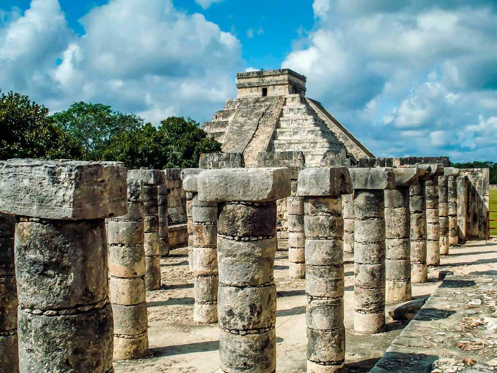
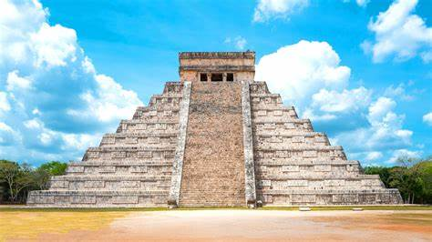

Chichen-itsa
Chichen-itsa (ayrim hollarda Chichen Itza shakli ham qoʻllanadi) — Yukatan yarim orolining shimolidagi mayyalarning siyosiy va madaniy markazi. Milodiy 8-asrda barpo etilgan deb taxmin etiladi. 10-asrda tolteklar tomonidan bosib olingan. 11-asr oʻrtalaridan Chichen-itsa tolteklarning Yukatandagi davlati poytaxtiga aylangan.

Mayyapana, Ushmal va Itsmal kabi shahardavlatlar qoʻshinlari tomonidan 1178-yil vayron qilingan. Ispanlar istilosi davrida (16-asr oʻrtasi) Chichen-itsa xaroba holatida boʻlgan. Chichen-itsa hududida bir necha marta qazishma ishlari olib borilgan.
Mayyatolteklarga mansub eng muhim meʼmoriy obidalarga „Qizil uy“, „Ayol monastiri“, „Cherkov“, „Qorakoʻl“ rasadxonasi, „Jangchilar ibodatxonasi“, Kukulkan ibodatxona ehromi („Kastilo“), toʻp oʻynashga moʻljallangan katta stadion va boshqalarni kiritish mumkin. Koʻplab monumentaldekorativ haykaltaroshlik namunalari va devoriy rasmlar topilgan.
.jpeg)
Chichen-itsa Terminal klassik davridagi Mayya xalqi tomonidan qurilgan Kolumbiyagacha choʻzilgan katta shahar edi. Arxeologik joy Meksikaning Yukatan shtati Tinum munitsipalitetida joylashgan.
Chichen-itsa Shimoliy Mayya pasttekisligida kech klassik davrdan (taxminan eramizning 600-900-yillari) to terminal klassik davrigacha (milodiy 800-900-yillar) va postklassik davrning dastlabki qismida ham (milodiy 900-1200-yillar) asosiy markaz boʻlgan.
Chichen-itsa eng yirik Mayya shaharlaridan biri boʻlgan. U keyinchalik Mesoamerikan adabiyotida tilga olingan afsonaviy buyuk shaharlardan biri yoki Tollans bo'lishi ham mumkin. Shahar Mayya dunyosidagi eng xilma-xil aholiga ega boʻlgan, bu manzilgohdagi meʼmorchilik uslublarining xilma-xilligiga hissa qoʻshgan, degan taxminlar mavjud.
